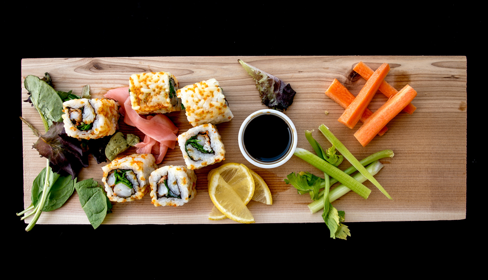
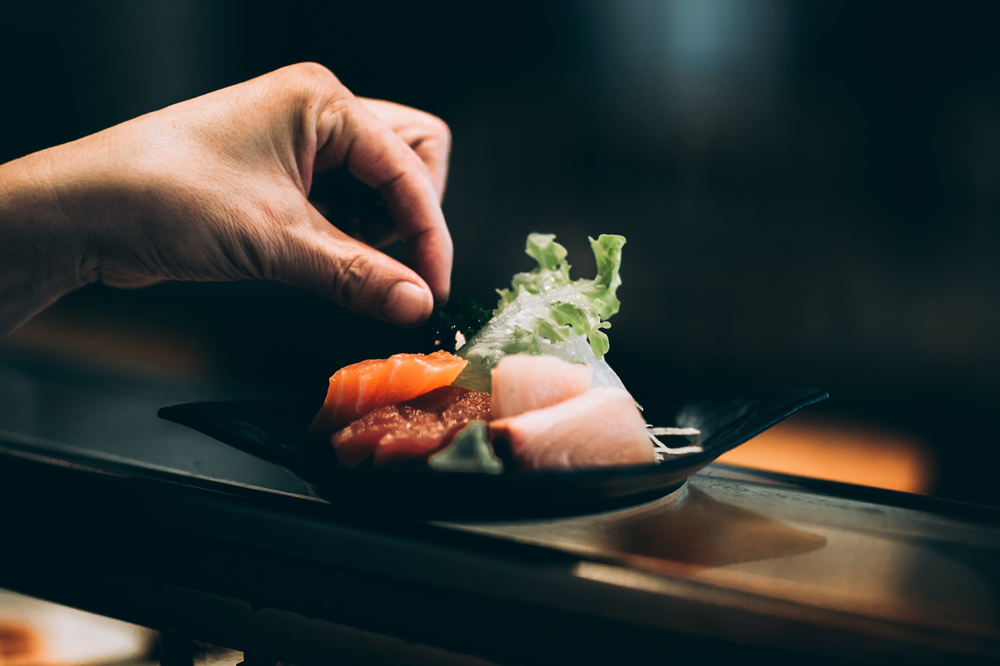
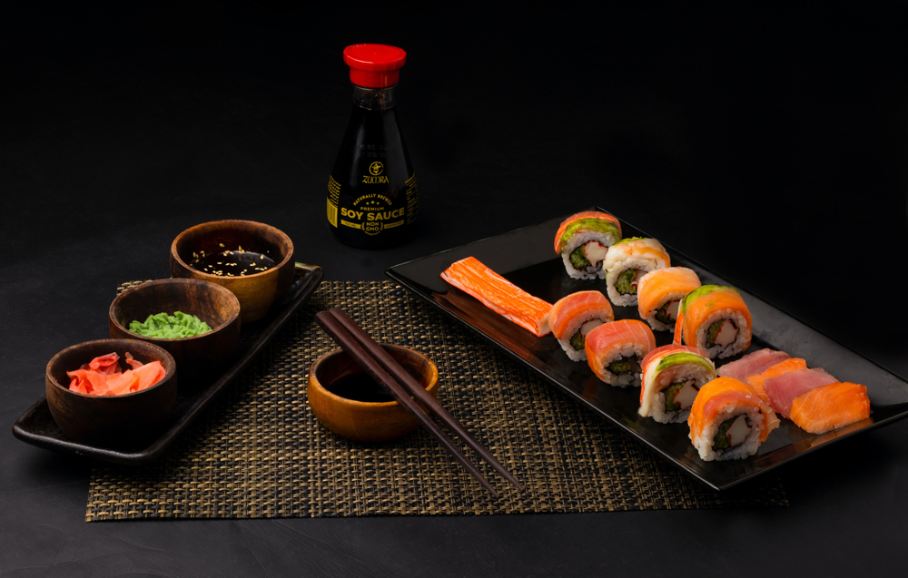
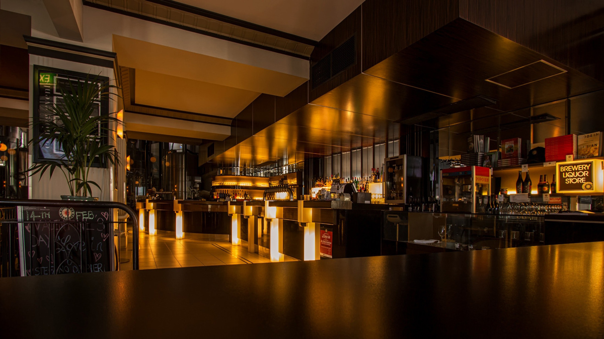

BOAS VINDAS

Olá, bem-vindo(a) ao Oishi, o restaurante japonês mais delicioso de São Paulo.
Aqui você vai encontrar uma variedade de pratos típicos da culinária japonesa, preparados com ingredientes frescos e de qualidade.
Venha saborear o nosso delicioso cardápio de sushi, sashimi, tempura, yakisoba e muito mais.Venha nos conhecer!
Aqui você vai desfrutar de um ambiente aconchegante e acolhedor, com um atendimento cordial e eficiente.
Temos opções para todos os gostos e ocasiões, desde um almoço rápido até um jantar romântico ou uma reunião de amigos.
Faça já a sua reserva e venha conhecer o Oishi, o restaurante japonês que vai conquistar o seu paladar.